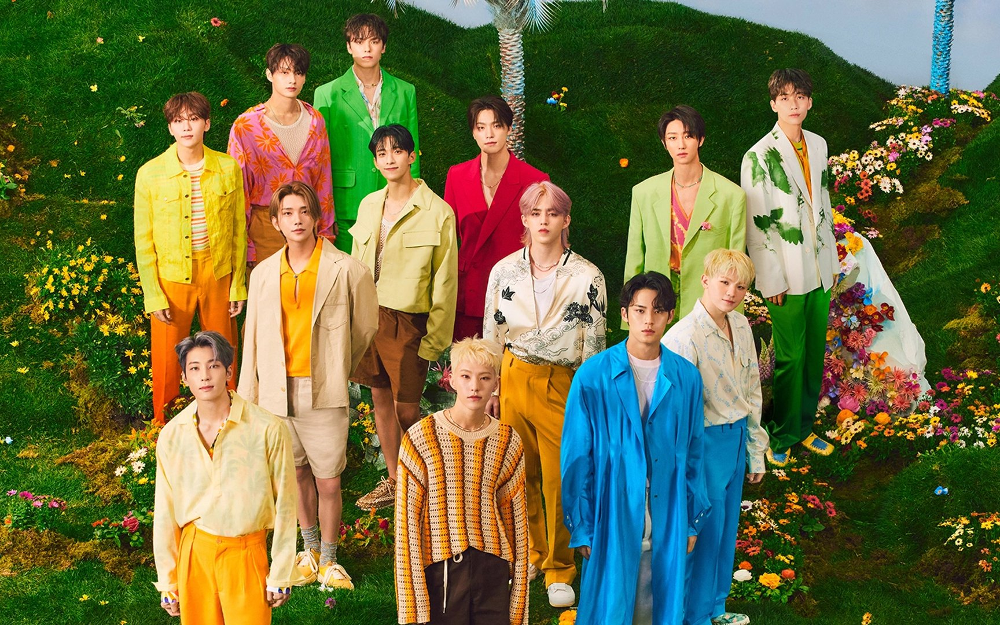
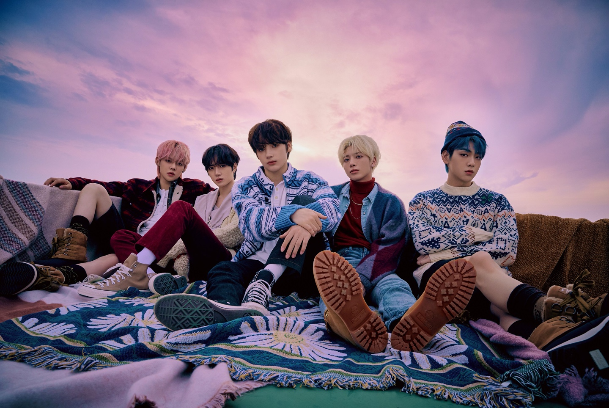
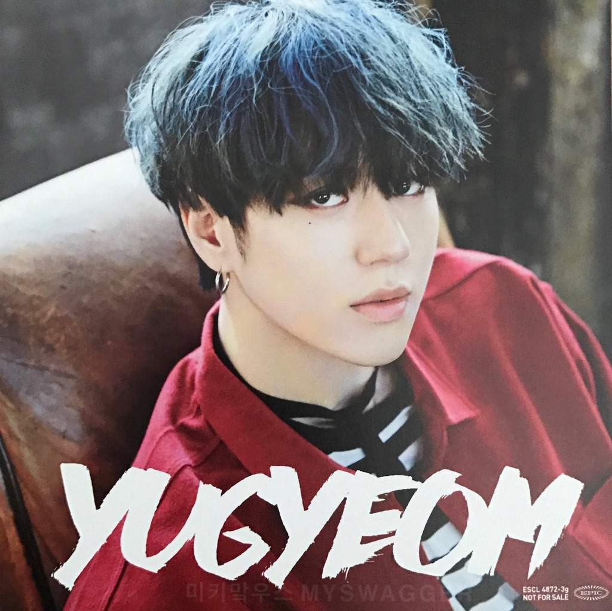
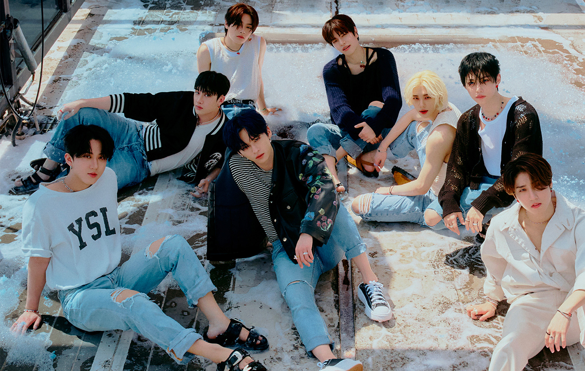
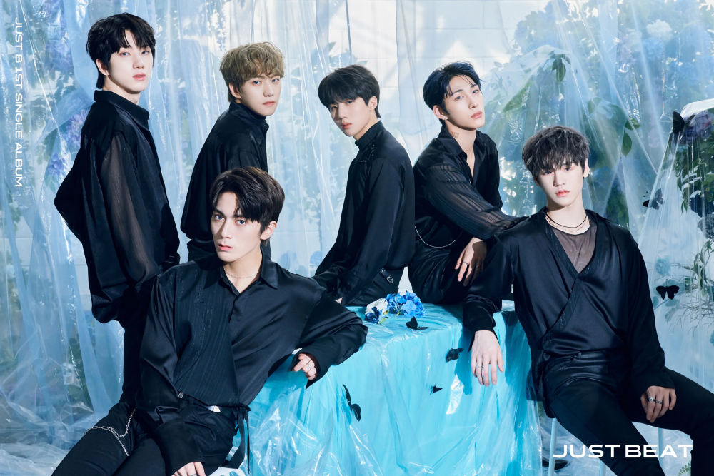
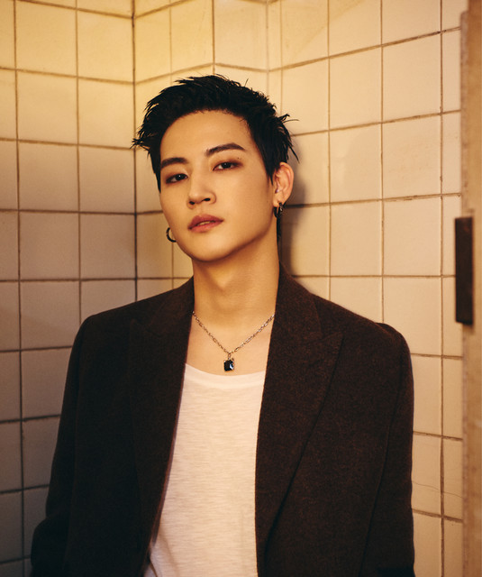
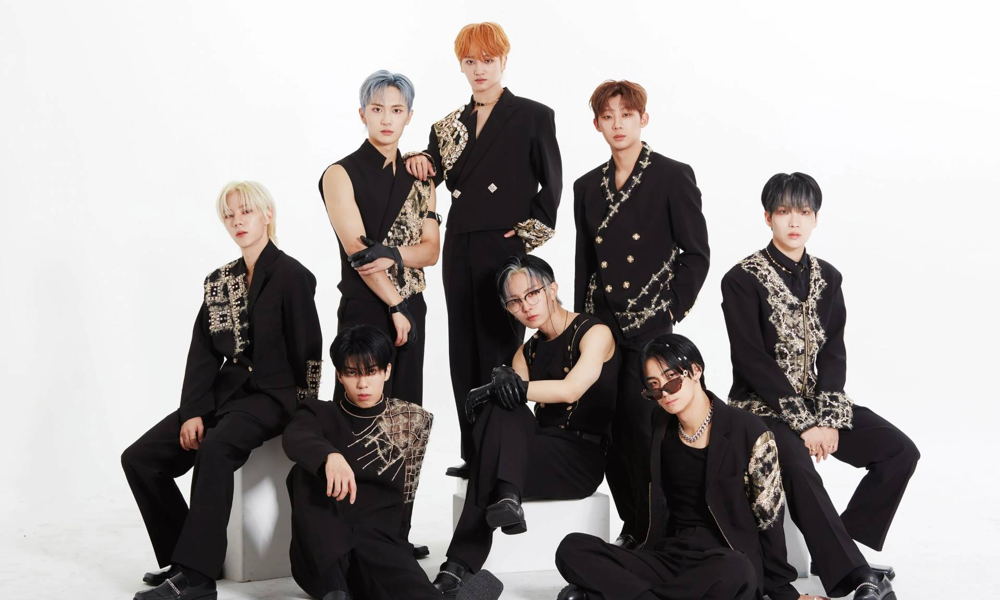
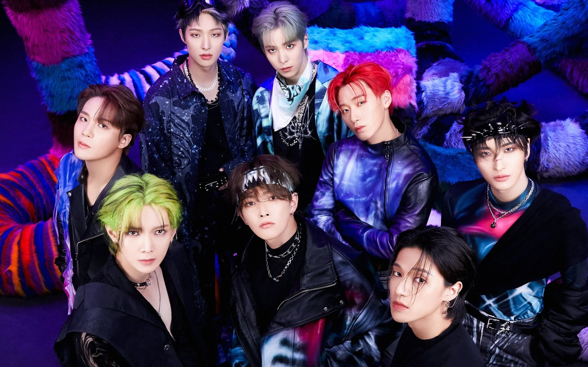
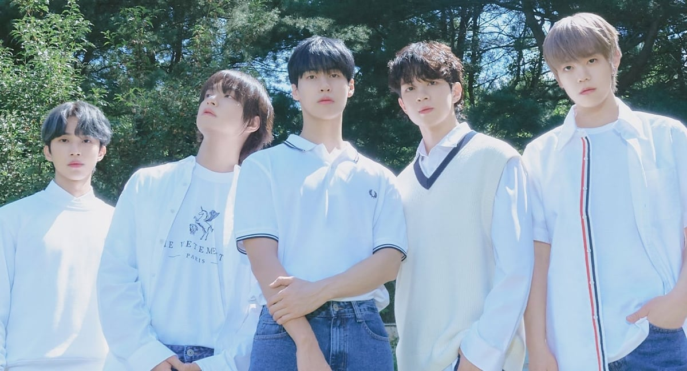

Conciertos de Kpop en México en 2025
Según un estudio de la plataforma de streaming Spotify, México ocupa uno de los primeros lugares en consumo de música Kpop en América Latina.
Además, eventos como la KCON y festivales han fomentado un interés masivo en la cultura coreana, incluyendo la gastronomía, el cine y la moda.
Si también eres un gran fanático del Kpop, te presentamos todo lo que necesitas saber sobre los próximos eventos de este año.
Enero
KARD
Fecha: 22 de enero
¿Dónde? Frontón México, CDMX.
El grupo mixto de Kpop regresa con su gira "Where to Now?", con esa dosis de música coreana que combina también géneros latinos como el reguetón.
Taemin
Fecha: 28 de enero
¿Dónde? Pepsi Center WTC, CDMX
El integrante de SHINee realizará su primer concierto en solitario en nuestro país, con su gira Ephemeral Gaze; aún puedes encontrar boletos en algunas zonas del recinto.
Febrero
Kino
Fecha: 2 de febrero
¿Dónde? Carpa Velódromo, CDMX
El integrante del grupo de Kpop Pentagon se presentará en México con su gira "I Think I Think Too Much", mostrando un enfoque más personal y artístico.
Aespa
Fecha: 4 de febrero
¿Dónde? Palacio de los Deportes, CDMX
Uno de los grupos favoritos de la cuarta generación del Kpop regresa a nuestro país con "SYNK: Parallel Line", con su mezcla de música pop y narrativas futuristas. Aún encuentras algunos boletos disponibles.
NMIXX
Fecha: 19 y 20 de febrero
¿Dónde? Auditorio BB, CDMX
Otro grupo solo de chicas también llega en el mes de febrero, con el fan concert titulado “NMIXX CHANGE UP: MIXX LAB”. Son dos fechas disponibles, por lo que aún hay boletos.
Marzo
J-HOPE
Fecha: 22 y 23 de marzo
¿Dónde? Palacio de los Deportes, CDMX
J-Hope de BTS vendrá a México después de 8 años de ausencia en nuestro país, con su tour “Hope on the Stage”, el cual dará inicio en febrero en Corea del Sur.
Abril
SEVENTEEN
Fecha: 4 de abril
¿Dónde? Festival Tecate Pa'l Norte, Monterrey
El grupo será una de las estrellas principales de este festival de música en el Parque Fundidora de Monterrey. Será su única presentación en el país, así que no te los pierdas.
Tomorrow X Together (TXT)
Fecha: 5 de abril
¿Dónde? Festival AXE Ceremonia, CDMX
La boyband debutará en México durante el festival en el Parque Bicentenario de la Ciudad de México. TXT también es uno de los grupos favoritos en la actualidad y es muy esperado.
Yugyeom
Fecha: 5 de abril
¿Dónde? Foro Puebla, CDMX
El integrante de GOT7, Yugyeom, tendrá su primer tour en solitario en Norteamérica y Latinoamérica, visitando nuestro país con su gira 2025.
Kangin
Fecha: 5 de abril
¿Dónde? Foro Bailmex de PALCCO, Guadalajara
El ex integrante de Super Junior vendrá a nuestro país en solitario, después de años de ausencia, al evento "Kangin Fan Meeting: Inside Out Day in Mexico". Se trata de una de las primeras presentaciones para promover el kpop en tierras jaliscienses.
Stray Kids
Fecha: 12 y 13 de abril
¿Dónde? Estadio GNP Seguros, CDMX
El grupo bajo el sello de la JYP ofrecerá dos conciertos consecutivos en el renovado estadio GNP Seguros. Su gira mundial, dominATE World Tour, ya es sold out en nuestro país.
Mayo
JUST B
Fecha: 2 de mayo
¿Dónde? Teatro Municipal José Calderón, Monterrey
El grupo de kpop se presentará en Monterrey con motivo de la inauguración del evento K-MTY 2025, aún se esperan detalles de su aparición.
SMTOWN LIVE 2025
Fecha: 9 de mayo
¿Dónde? Estadio GNP Seguros, CDMX
Este festival icónico de SM Entertainment llegará por primera vez a México en el 2025, celebrando el 30 aniversario de la compañía. Los artistas confirmados hasta el momento son miembros del grupo EXO, NCT y subunidades, Super Junior, aespa y más.

Junio
W24
Fecha: 14 de junio
¿Dónde? La Maraka, CDMX
La banda de kpop se presentará en México como parte de su gira por Latinoamérica, como parte del tour para promocionar su más reciente álbum.
Baekhyun
Fecha: 20 de junio
¿Dónde? Pepsi Center WTC, CDMX
El integrante de EXO regresa a México en una presentación solista, bajo el tour "Reverie World Tour 2025". También visitará Brasil y Chile, después de varios años de ausencia en Latinoamérica.
Julio
Jay B
Fecha: 17 de julio
¿Dónde? Auditorio BB, CDMX
El líder del grupo de Kpop GOT7 regresa a México con "TAPE:RE LOAD", una gira que también estará en otros dos países de Latinoamérica.
NTX
Fecha: 17 de julio
Dónde: Sin confirmar
Los chicos de NTX llegan con su primera gira por Latinoamérica, titulada "Our Track". Visitarán México, pero también Uruguay, Argentina, Perú, Chile y Colombia.
Agosto
Bang Yedam
Fecha: 8 de agosto
¿Dónde? Pabellón Oeste, CDMX
Por primera vez en Latinoamérica y con el tour "Fallin for you", el cantante coreano y ex miembro de Treasure estará en tierras mexicanas en el mes de agosto.
The Rose
Fecha: 12 de agosto
¿Dónde? Pepsi Center, CDMX
La banda de pop rock e indie presenta su gira "Once Upon A WRLD" en el mes de agosto, marcando su regreso después de un par de años de ausencia en escenarios mexicanos.
ATEEZ
Fecha: 23 de agosto
¿Dónde? Estadio GNP Seguros, CDMX
El grupo de kpop con 8 integrantes se presentará por primera vez en el GNP de la CDMX, con su gira "In Your Fantasy". La fecha en México será la que cierre su paso por Norteamérica.
Conciertos en 2026: artistas de Kpop que ya confirmaron
N.FLYING
Fecha: 9 de enero
¿Dónde? Sin confirmar
El icónico grupo de la segunda generación se presentará en nuestro país a inicios del mes de enero del 2026, siendo quizá el primer concierto del género en México.
Conciertos de Kpop en México para 2025: de quiénes hay rumores
Como cada año, los rumores sobre posibles conciertos de Kpop en México para 2025 son bastantes. Según insiders en redes sociales, especialmente en la plataforma X, los más posibles son:
- Enhypen: de acuerdo con fuentes no oficiales, podrían presentarse en nuestro país después de Coachella.
- Wonho: después de presentarse en el mes de noviembre durante un festival, estará de vuelta ahora en un concierto en solitario.
- Jackson Wang: el integrante de GOT7 está a punto de lanzar nuevo material discográfico, lo que dio pie a rumores sobre un tour con parada en México.
- Le Sserafim: el grupo de chicas tiene fuertes rumores de un concierto en solitario en el último semestre de 2025.
- Blackpink: el regreso de las chicas a México se tiene contemplado para el último trimestre de 2025 y los primeros meses de 2026, pues recientemente anunciaron sus primeras fechas internacionales.
- SEVENTEEN: después de su visita al Pal'Norte, la agrupación suena fuerte para un regreso, esta vez a la CDMX.